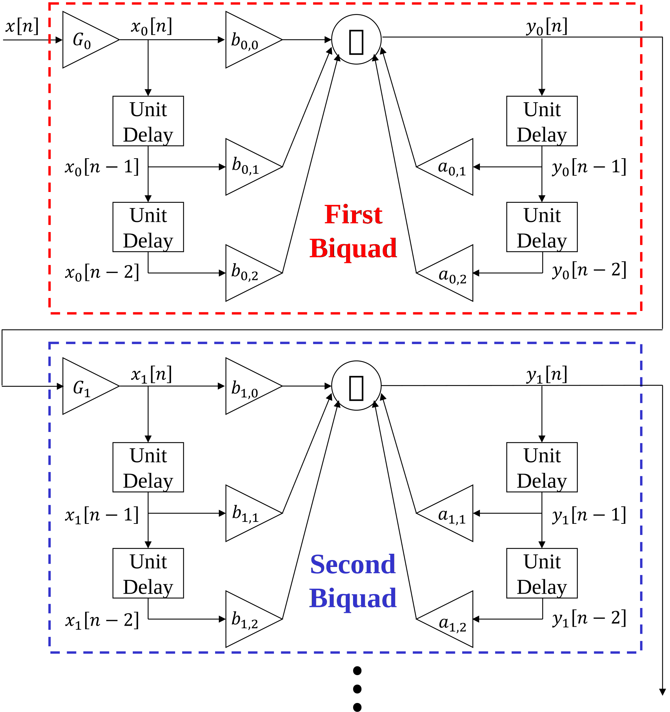

Lab 3 Primer#
Digital filters have several benefits compared to their analog counterparts
Design can be modified/tuned with software changes only
Exact initial conditions can be enforced
Scale to extremely high order
Can be designed for perfectly linear phase
Digital filters are used in a plethora of applications. To name a few,
Speech and audio
Image, video, and computer vision
Sonar, radar, and medical imaging
Digital communication (wifi, cellular, etc)
Review of LTI systems and filters#
Finite impulse response (FIR) filters#
For a causal discrete-time FIR filter, each output sample \(y[n]\) is computed by taking the inner product of the input samples \(x[n]\) with the filter coefficients \(b[n]\).
This is often visualized as a ‘tapped delay line’

FIR filter design#
For typical frequency selective filters, the design goals are threefold
Minimize distortion of the signal in the passband(s)
Attenuate the stopband as much as possible
Keep the order of the filter low
As an example, consider the design of a bandpass filter. Ideally, the passband would have a gain of 0 dB and the two stopbands would have a gain of \(-\infty\) dB. However, we know that such an ideal filter would require infinite delay. In practice, we tolerate some amount of distortion in the passband and accept a small amount of leakage through the stopband. This leads to two important design tradeoffs:
Better frequency selectivity vs lower delay
Performance in the passband(s) vs performance in the stopband(s)

The Parks-McClellan algorithm (aka equiripple) produces a set of filter coefficients that is optimal in the sense that it minimizes the worst deviation between the actual response and the desired response. When using this method, we have control over several parameters:
Filter order \(N\)
Lower order will provide shorter delay
Higher order will provide better frequency selectivity
Relative weights \(W\)
Specifies how to weight each passband and stopband when computing the error that is minimized by the algorithm
Location of transition regions (specified by \(f_{\text{pass}_i}\) and \(f_{\text{stop}_i}\))
Transition regions cause to much distortion to function as a passband but not enough attenuation to function as a stopband
Smaller transition region increases the amount of usable bandwidth
Larger transition region will provide better performance in the passband and stopband
Other FIR filter design methods include least-squares and window design methods.
Frame-based processing#
For a real-time system, data is constantly flowing in from the ADC and out to the DAC. We can configure how many samples to collect between interrupt triggers from the ADC.
In the extreme case, we can trigger an interrupt each time a new sample is available and immediately compute one output sample of the filter. alternatively, we can wait until a frame of \(N_F\) samples is collected before triggering an interrupt then compute \(N_F\) output samples of the filter.
There are a number of advantages to a frame-based implementation:
Less overhead
Each interrupt requires a fixed number of processor cycles \(N_I\).
For sample-by-sample processing, this cost is incurred for each sample
For frame-based processing, this is reduced to \(N_I / N_F\) per sample
Computational advantages
Algorithms to filter \(N_f\) samples can be more efficient than algorithms that operate sample-by-sample
Allows use of single instruction multiple data (SIMD) operations
Memory advantages
In some systems, large blocks of memory can be moved more efficiently.
Caching may be more efficient with large frames
IIR Filters#
For a causal discrete-time IIR filter, each output sample \(y[n]\) is computed from a set of feedforward terms and a set of feedback terms.
The choice to subtract the feedback terms rather than add them is arbitrary, but this is conventional because it leads to a slightly simpler expression of the transfer function in the z-domain

Numerical errors#
With finite precision data types, many sequences of operations can be carried out with perfect accuracy. For example:
>> single(7.2)*single(13.8)*single(1.0)
99.36
In general however, operations using finite precision data types (such as single precision floating point) are subject to numerical errors. For example:
>> single(7.2)*single(13.8e-35)*single(1.0e35)
99.35999
These numerical errors can cause serious issues in the design and implementation of IIR filters.
Cascade of biquads#
Previously, the transfer function was expressed in terms of the coefficients \(b_k\) and \(a_k\). Alternatively, we can express it in terms of poles \(p_k\), zeros \(\zeta_k\), and a constant gain \(C\).
A downside of this representation is that, even if all \(a_k\) and \(b_k\) are real, the corresponding \(p_k\) and \(\zeta_k\) may be complex. Alternatively, we can group together pairs of conjugate symmetric poles and zeros to create a similar similar representation where all of the coefficients are real. This is known as a cascade of biquads or a second-order sections representation.
